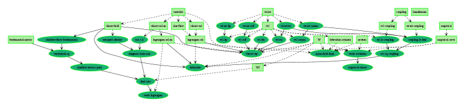
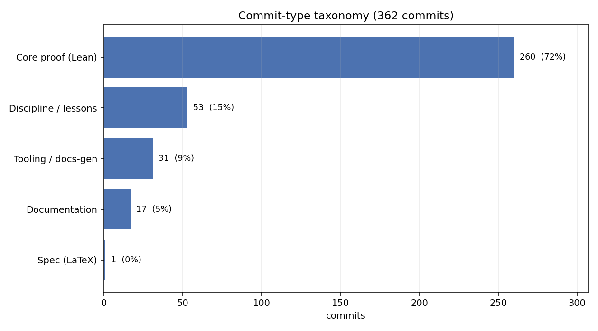
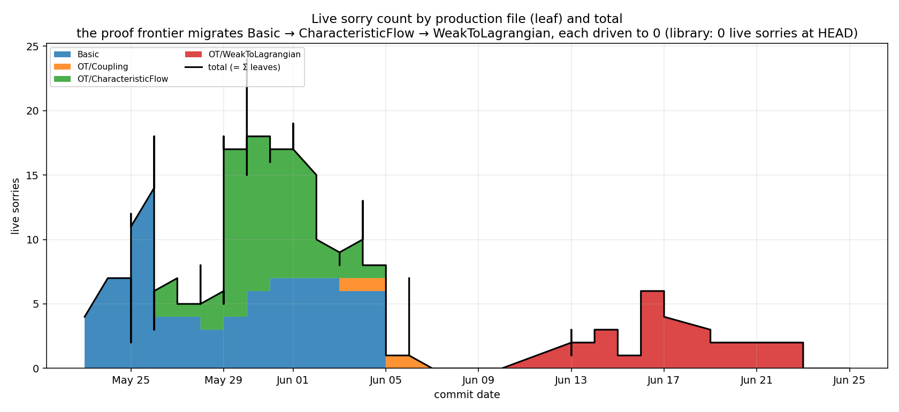

Formalizes Dobrushin's mean-field derivation of the Vlasov equation in Lean 4 via an AI-directed workflow, exporting a Mathlib-absorbable optimal-transport layer.
Abstract
We formalize a research result in the Lean 4 proof assistant by having a mathematician direct an AI system, and frame the activity as a formalization game. The objective is to turn a LaTeX document into Lean. The game is won when the development compiles, contains no sorry, and a machine check shows the target theorems rest on Lean's foundational axioms alone. Reuse is a second check, by a definition we introduce: whether the development yields a self-contained layer of general mathematics the wider library could absorb. The case study is a complete, axiom-clean formalization of well-posedness for the nonlinear Vlasov equation via Dobrushin's mean-field route – existence, uniqueness, the stability estimate and mean-field limit, and a short-window superposition principle (weak solutions are Lagrangian). The human's role was to direct, not to write proofs: to scope the definitions, steer the decompositions, and triage the library's gaps; the AI agent executed. The formalization certifies the proof of each statement as written; whether the written statement is the intended theorem stays the mathematician's judgment. The optimal-transport machinery that fell out of the build (in particular, properties of the Wasserstein-1 metric and the Kantorovich-Rubinstein duality theorem) separates into a self-contained layer that compiles against Mathlib alone: about a sixth of the development (49 of 299 declarations), behind a 22-declaration interface with no reverse dependency. The headline theorems ran in about a week, the full development in about a month. We report the quantitative claims as observations of one game, not as general laws. The game's rules name no particular system, so the methodological framing is meant to outlast the tools of any one run.
Problem
Formalizing research-level mathematics in Lean has historically lagged far behind informal proofs due to the volume of intermediate steps and library gaps. The paper asks how to trust AI-generated Lean proofs and whether the resulting artifacts are reusable.
Approach
The activity is framed as a formalization game with a win condition: the development compiles, contains no sorry, and target theorems depend only on Lean's foundational axioms (propext, Classical.choice, Quot.sound), checked via #print axioms. A mathematician directs an agentic AI system (Claude Code driving frontier Claude models, with specialized sub-agents) that executes the proofs, while the human scopes definitions and triages library gaps. A self-contained layer of general optimal-transport mathematics is isolated to build against Mathlib alone. A verification discipline requires certifying by axiom footprint and committing one unit at a time.

Figure 1: A roadmap of the development: the project blueprint’s dependency graph, auto-extracted from the elaborated Lean proof terms — boxes are definitions, ellipses theorems, green fully formalized. The interactive version, with statements and proof sketches on every node, is at hydrodynamical.github.io/Vlasov_Meanfield_Formalization .

Figure 4: From the case study of Section 3 : all 362 commits classified by primary intent. Roughly one in seven is pure meta-knowledge capture (discipline / lessons) — a direct, if heuristic, measure of the meta-learning loop, distinct from the proof work itself.
Results
A complete axiom-clean formalization of well-posedness for the nonlinear Vlasov equation (existence, uniqueness, stability estimate, mean-field limit, short-window superposition principle) was produced over about a month, headline theorems in about a week. About a sixth of the development (49 of 299 declarations, behind a 22-declaration interface with no reverse dependency) forms a self-contained Wasserstein-1 / Kantorovich-Rubinstein layer compiling against Mathlib alone.

Figure 2: From the case study of Section 3 ( 362 commits): live sorry count per production file, stacked so the leaves sum to the total (black line). The open-goal front is concentrated in one active leaf at a time and migrates across the development; the total peaks at 24 and returns to 0 . The two humps are two games — the well-posedness/stability marquee and the superposition-principle follow-o